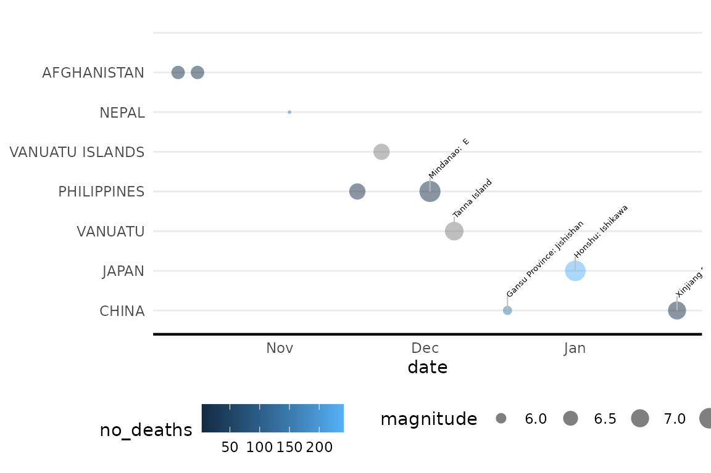

vignettes/NOAA_Earthquake_Package_Vignette.Rmd
NOAA_Earthquake_Package_Vignette.RmdThis vignette provides an overview of the visualizeNOAA
package functionalities for cleaning and visualizing earthquake data
from NOAA.
You can install the package from GitHub using the following command:
#devtools::install_github("apd540/visualizeNOAA")The eq_clean_data() function cleans the raw NOAA earthquake data. It reads the data from a tab-delimited file, creates a date column, and converts latitude and longitude to numeric class.
cleaned_data <- eq_clean_data("../inst/extdata/earthquakes.tsv")
cleaned_data %>%
head()
#> # A tibble: 6 × 6
#> date latitude longitude Location.Name magnitude no_deaths
#> <date> <dbl> <dbl> <chr> <dbl> <dbl>
#> 1 480-09-29 37.9 23.5 GREECE: SARONIC GULF NA NA
#> 2 186-02-22 33.8 106. CHINA: GANSU PROVINCE 7 760
#> 3 70-06-01 36.3 119 CHINA: SHANDONG PROVINCE 7 6000
#> 4 47-04-17 34.9 105. CHINA: GANSU PROVINCE: LON… NA NA
#> 5 31-09-02 32 35.5 ISRAEL: QUMRAN,ARIHA (JERIC… 7 NA
#> 6 37-04-09 36.1 36.1 TURKEY: ANTAKYA (ANTIOCH) NA NAThe eq_location_clean() function cleans the LOCATION_NAME column by stripping out the country name and converting names to title case.
cleaned_location <- eq_location_clean(cleaned_data)
cleaned_location %>%
head()
#> # A tibble: 6 × 8
#> date latitude longitude Location.Name country location magnitude
#> <date> <dbl> <dbl> <chr> <chr> <chr> <dbl>
#> 1 2024-01-22 41.3 78.6 CHINA: XINJIANG PROV… CHINA Xinjian… 7
#> 2 2024-01-01 37.5 137. JAPAN: HONSHU: ISHIK… JAPAN Honshu:… 7.5
#> 3 2023-12-18 35.7 103. CHINA: GANSU PROVIN… CHINA Gansu P… 5.9
#> 4 2023-12-07 -20.7 169. VANUATU: TANNA ISLA… VANUATU Tanna I… 7.1
#> 5 2023-12-02 8.53 126. PHILIPPINES: MINDAN… PHILIP… Mindana… 7.6
#> 6 2023-11-22 -15.0 168. VANUATU ISLANDS: MAE… VANUAT… Maewo 6.7
#> # ℹ 1 more variable: no_deaths <dbl>The geom_timeline() function plots a timeline of earthquakes.
df_visualize <- bind_rows(
cleaned_location %>%
head(10),
data.frame(country="", location ="")) %>%
mutate(country=factor(country, levels = unique(country)))
ggplot(data = df_visualize) +
geom_timeline(aes(date,size = magnitude, color = no_deaths)) +
theme_minimal() +
theme(
axis.line.x = element_line(linewidth = 0.75),
axis.title.y = element_blank(),
panel.grid.major.x = element_blank(),
panel.grid.minor.x = element_blank(),
legend.position = "bottom"
)
#> Warning: Removed 1 row containing missing values or values outside the scale range
#> (`geom_timeline()`).The geom_timelinelabel() function includes label as well.
ggplot(data = df_visualize) +
geom_timeline(aes(date,country, size = magnitude, color = no_deaths)) +
geom_timelinelabel(aes(date,country,label = location), n_max = 5) +
theme_minimal() +
theme(
axis.line.x = element_line(linewidth = 0.75),
axis.title.y = element_blank(),
panel.grid.major.x = element_blank(),
panel.grid.minor.x = element_blank(),
legend.position = "bottom"
)
#> Warning: Removed 1 row containing missing values or values outside the scale range
#> (`geom_timeline()`).
#> Warning: Removed 1 row containing missing values or values outside the scale range
#> (`geom_timeline_label()`).
This function filters the cleaned earthquake data to include only earthquakes in Mexico since the year 2000 and visualizes them on a leaflet map. Each earthquake is represented by a circle on the map, with the circle’s radius proportional to the earthquake’s magnitude. The pop-up for each circle displays the date of the earthquake.
eq_clean_data("../inst/extdata/earthquakes.tsv") %>%
eq_location_clean() %>%
filter(country=="MEXICO" & lubridate::year(date) >= 2000) %>%
eq_map(annot_col = "date")This function filters the cleaned earthquake data to include only earthquakes in Mexico since the year 2000. It then creates custom annotations for each earthquake, including information about the location, magnitude, and total deaths. These annotations are added to the leaflet map, providing more detailed information when a user interacts with the map.
eq_clean_data("../inst/extdata/earthquakes.tsv") %>%
eq_location_clean() %>%
filter(country=="MEXICO" & lubridate::year(date) >= 2000) %>%
mutate(popup_text = eq_create_label(.)) %>%
eq_map(annot_col = "popup_text")